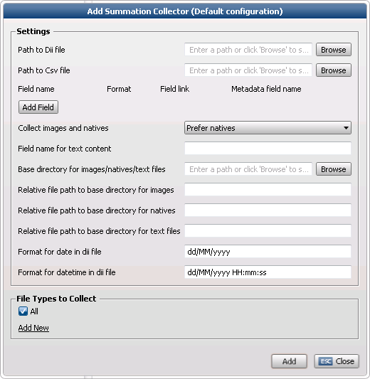
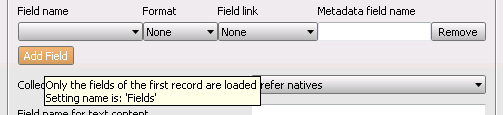

The Summation Collector collects load files as used by the Summation DII format (.dii files).
If there are images, the images are converted to TIFF and wrapped in a ZyXmlTiff file.

Settings
Path to .dii file Enter the path to the DII file, or browse to the correct location.
Path to .csv file Enter the path to the CSV file (if not automatically added), or browse to the correct location.
The CSV file contains meta data as a supplement to the dii file.
Fields (if present) are collected from the field settings of both the .dii file and the .csv file. Summation Collector assumes the first row in the csv file contains the header information. You can select which fields you want to add (see below).
Specify a Field with field link DocumentId as a link in the csv file to the record id (@T token in dii file). The .dii and the .csv file will be linked to each other and will be able to read the fields of one another.
Fields
Attention: To see the relationship between attachments and parent documents (the families) in Legal Review, add application/zyxmltiff to the KnownFamilyTypes section of the Review.Standalone.Winservice.config file (this file can be found at \\Program Files (x86)\ZyLAB\EDiscovery\LegalReview\). To prevent that the parent is missing (when you Prefer natives to be collected), make sure you add application/msg to the KnownFamilyTypes section of the Review.Standalone.Winservice.config file.

Field definitions
Field name The field names as used in the dii and csv file. Choose which fields you want to add as meta data.
Format Define the format of the field. Choose from None, Text, Date, DateTime
Field link Define how the field will be linked. Choose from None, DocumentId (used to link a field from the dii file with the csv file), Link to native (natives are linked to natives), Link to parent (images (ZyXMLTiff files) are linked to images).
Metadata field name Fieldname mapping for field in the .dii and .csv file to fields in meta data. Should also be defined in the the LegalReview template.
Validation
- Check if there are no empty fields. - Check if there are no fields defined twice. - Check if there are no fields with the same purpose defined twice. - Check if there are fields with no format. - Check if there is a field "Link to native" if you specify "Collect both images and natives" or "Prefer natives". - Check if there is a field with DocumentId if "Path to Csv file is" filled in.
Collect images and natives Choose from:
Prefer images Images will be collected. However, if no image is available, the native will be collected.
Prefer natives Natives will be collected. However, if no native is available, the image will be collected.
To prevent that the parent is missing, make sure you add application/msg to the KnownFamilyTypes section of the Review.Standalone.Winservice.config file.
Both images and natives When present, both native and image will be collected. ZyXmlTiff files (images) are shown by default in Legal Review.
Field name for text content Specify the meta data field where the OCR-ed text will be stored. The OCR-ed text is retrieved from a file specified in the Field section as "Link to Text".
Base directory for image/natives/text files Specify the base directory if the .dii file is on a different location as the images/natives and text files.
Relative path to base directory for images Subdirectory relative to the base path for images. This is usually left empty. It will be combined with the base directory and used to replace the @I token in the DII files. For example, when having the images folder at C:\myMatters\Matter1\IMAGES and the DII files contains @I\Matter1\IMAGES you should use Base directory: C:\myMatters and leave this setting empty (c:\myMatters + Matter1\IMAGES will be enough).
Relative path to base directory for natives Subdirectory relative to the base path for natives. For example "eDocs\eFiles". Again this depends on the contents of the DII/CSV file. If it already contains a relative path we will combine it with the base directory and this setting. In most cases this can also be left empty.
Relative path to base directory for text files Subdirectory relative to the base path for OCR-ed text files. For example "Images".
Format for date in .dii file Check to see if the specified format corresponds with the format used in the dii file.
Format for datetime in .dii file Check to see if the specified format corresponds with the format used in the dii file.
File Types to Collect
Select the appropriate File Groups. To create new File Groups, click Add New. For more information on how to define File Groups, see Define File Groups.